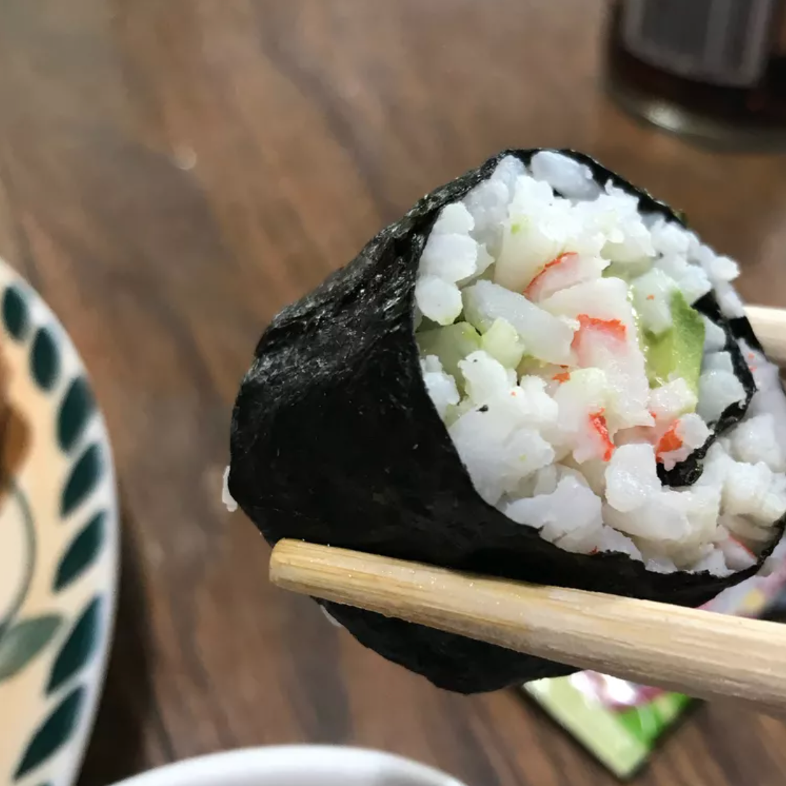

Sushi

Delicious sushi from the comfort of your house!
By buying this ingredients and following these steps, beautiful girls named Sofia Jimenez Cruz will be able to make the most delicious sushi at home with their very handsome boyfriends named Ivan Berezin!
*All the ingredients which go inside the sushi can be changed*
Ingredients
- 1 1/3 cups water
- 2/3 cup uncooked short-grain rice vinegar
- 3 tablespoons rice vinegar
- 3 tablespoons white sugar
- 1 1/2 teaspoons salt
- 4 sheets nori seaweed sheets
- 1/2 pound imitation crabmeat, flaked
- 1 avocado - peeled, pitted, and sliced
- 1/2 cucumber, peeled, cut into small strips
- 2 tablespoons pickled ginger
Steps
- Preheat the oven to 300 degrees F (150 degrees C).
- Bring water to a boil in a medium pot; stir in rice. Reduce heat to medium-low, cover, and simmer until rice is tender and water has been absorbed, 20 to 25 minutes.
- Mix rice vinegar, sugar, and salt in a small bowl. Gently stir into cooked rice in the pot and set aside.
- Lay nori sheets on a baking sheet.
- Heat nori in the preheated oven until warm, 1 to 2 minutes.
- Center 1 nori sheet on a bamboo sushi mat. Use wet hands to spread a thin layer of rice on top. Arrange 1/4 of the crabmeat, avocado, cucumber, and pickled ginger over rice in a line down the center. Lift one end of the mat and roll it tightly over filling to make a complete roll. Repeat with remaining ingredients.
- Use a wet, sharp knife to cut each roll into 4 to 6 slices.
- TIP
If you do not have a bamboo sushi mat, the easiest way to roll sushi is with a clean dish towel.
Return to top
Return to home page